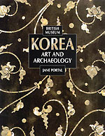

|
|
Department
of Oriental Antiquities > research
> BM publications
|
Blurton,
R. 1993. Hindu Art. BMP: London
Hinduism has always gloried in depicting the divine, and over the
centuries has inspired art which is often colourful and visually
exciting. This
survey provides an introduction to the Hindu temple architecture,
sculpture and painting of the Indian subcontinent over more than
two thousand years.
Stylistically
Hindu art is not homogenous, so this book adopts an approach based
on iconography and the history of cults.
Two introductory chapters provide historical and religious background;
these are followed by a chapter on the architecture, decoration,
and use of Hindu temples. The
central section of the book is devoted to an examination of the
art of the three major cults of Hinduism: the worship of Shiva,
Vishnu, and the Great Goddess, in all their many forms. The
last chapter offers a chronological and regional overview of this
complex and fascinating subject.
|
|
|
Khan,
F., Knox, J.R., & Thomas, K.D. 1991. Explorations and Excavations
in Bannu District, North-West Frontier Province, Pakistan, 1985-1988.
British Museum Occasional Paper No.80.
This
publication presents the results of excavations at the site between
1985 and 1988, and the analysis of collections held by the Department
of Oriental Antiquities at The British Museum.
|
|
|
Khan,
F., Knox, J.R., Magee, P., and Thomas, K.D., with a contibution
by Petrie, C. 2000. Akra: the Ancient Capital of Bannu, in Journal
of Asian Civilisations Vol XXIII(1)
This
publication by the Bannu Archaeological Project represents the results
of three seasons of exploratory work in the Bannu basin, NWFP, Pakistan
between 1985 and 1988.
During
this time the project identified a number of previously unknown
later Prehistoric sites, one of which (Sheri Khan Tarakai) is now
known to be the second oldest village farming settlement in south
Asia.
The
publication not only provides detailed information about the archaeological
sites and their material culture, but also information about the
environment and physiography of the region. In addition to the descriptions
there are also seventy-one figure drawings and twenty-one plates.
|
|
|
Portal,
J. 2000. Korea: Art and Archaeology. Thames & Hudson:
London
Korea:
Art and Archaeology is published in association with the opening
of a major new permanent Korean Gallery in The British Museum.
The
Korean peninsula is located at the eastern edge of Asia between
China, Russia, and Japan. This simple geographical fact has proved
crucial to its history, but despite strong trade links with its
neighbours as well as intermittent invasion and occupation, Korea
has managed to retain its own unique identity.
This
beautifully illustrated book, the first authoritative general introduction
to the distinctive culture of this fascinating country to be published
in English, traces the development of Korea chronologically from
the Neolithic period (c.6000 BC) right up to the present day.
|
 |
 
|